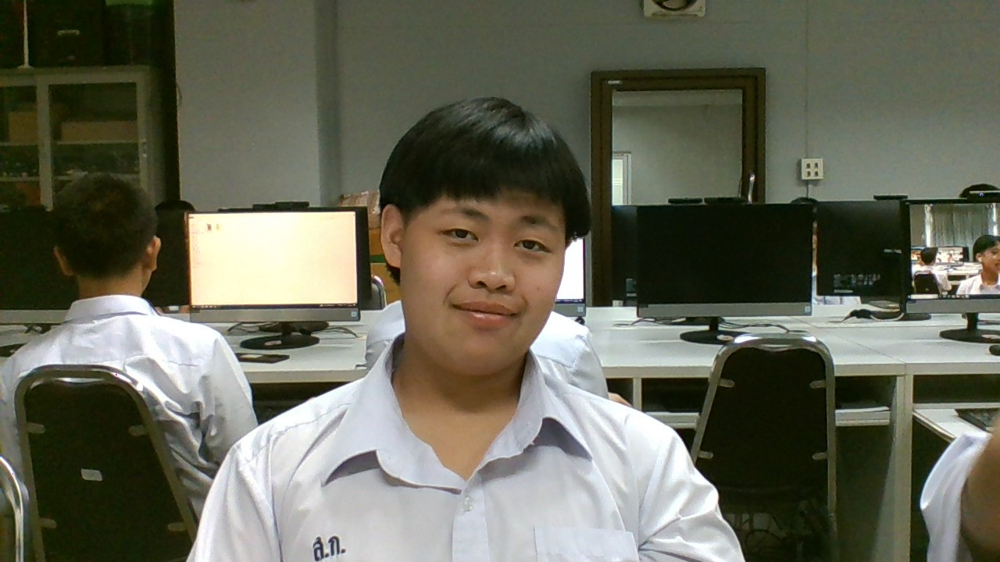

นางสาวณิชากร แสงอินทร์ : ขอบคุณมากๆครับที่สอนผม
บทเพลงที่มอบให้ครู

นายสถาพร อุทธา : ขอบคุณที่ทำให้ผมสนุกในการเรียนครับ
บทเพลงที่มอบให้ครู

นายวีรชัย คำสมหมาย : ขอบคุณที่คอยแนะนำผมนะครับ
บทเพลงที่มอบให้ครู

นายสิงหา สุวรรณศรี : ขอบคุณครับที่เอ็นดูผม
บทเพลงที่มอบให้ครู

น.ส.ศรันรัตน์ ไผ่พงศาวงศ์ : ขอบคุณมากๆครับที่สอนผม
บทเพลงที่มอบให้ครู

จัดทำโดย : เด็กชายทองปวริศร์ บิ๊กกิมธนกฤตส์ 211 เลขที่ 19